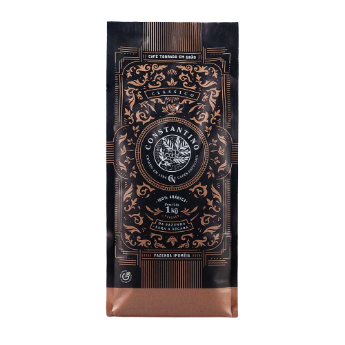
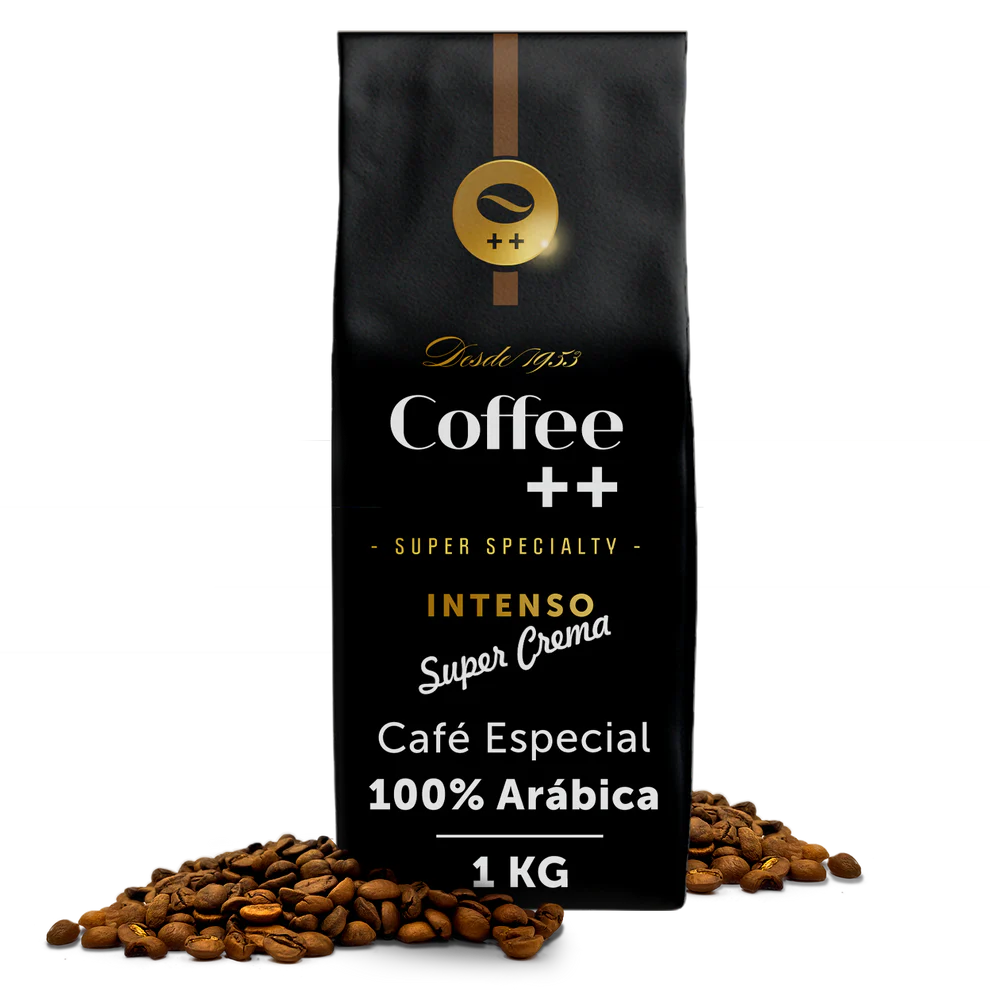
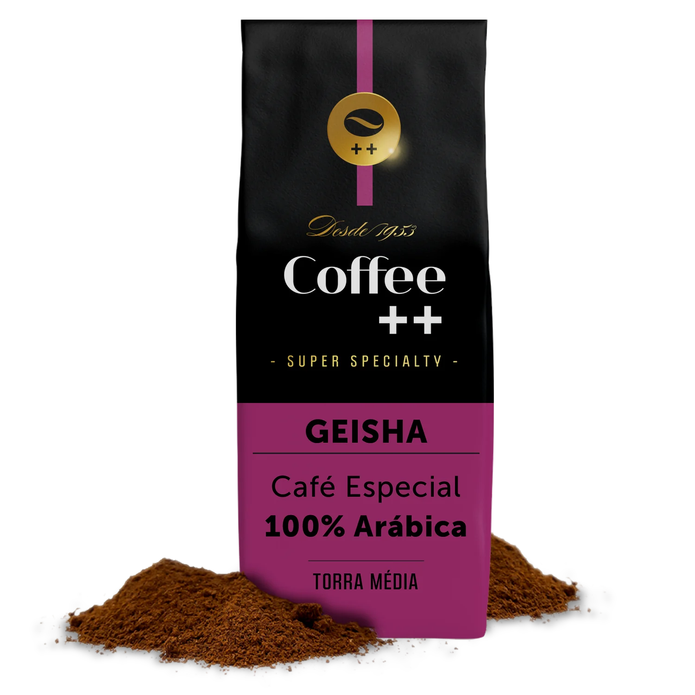
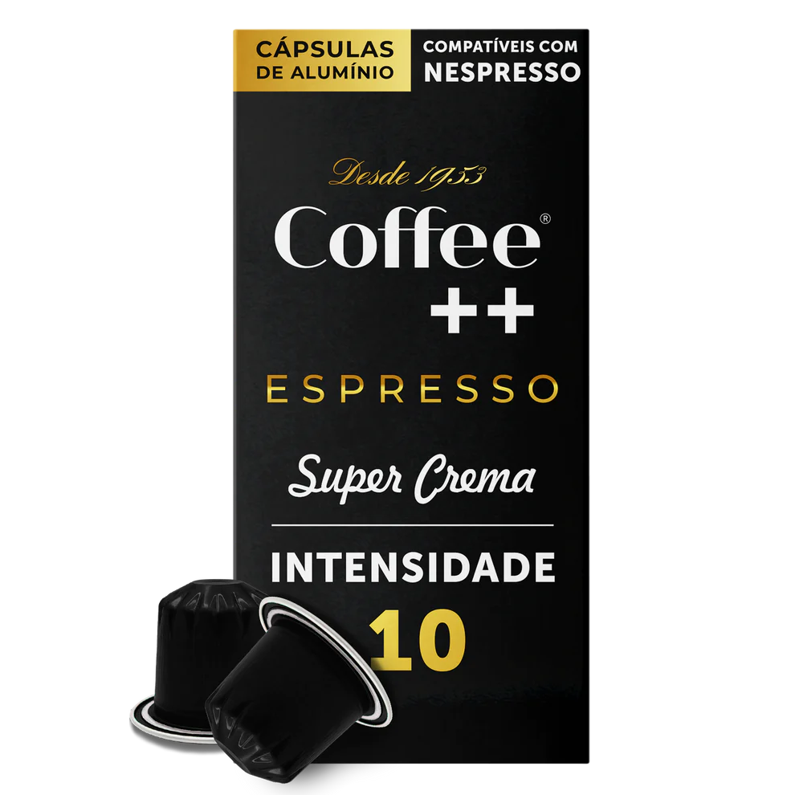

Coffe Constantino
On the palate, the natural sweetness of the grains contrasts with the pleasant acidity of ripe red fruits and a caramelized taste.
Super Crema Coffee Beans
Coffee is affection and the ideal invitation for a good conversation. What do you think of offering cups of the original espresso in the preparation of a freshly ground coffee with 100% Arabica beans and chocolate intensity.
Ground Geisha Coffee
100% ARÁBICA | This is the "Best Coffee in the World", according to the 2018 Cup of Excellence.
Coffee Super Crema Espresso
to use this product, prepare a special capsule machine with hot water. fit a capsule inside, resisting it to one side. then close the machine and press the start button. when the liquid comes out of the machine, the drink is ready to be served. to be served.